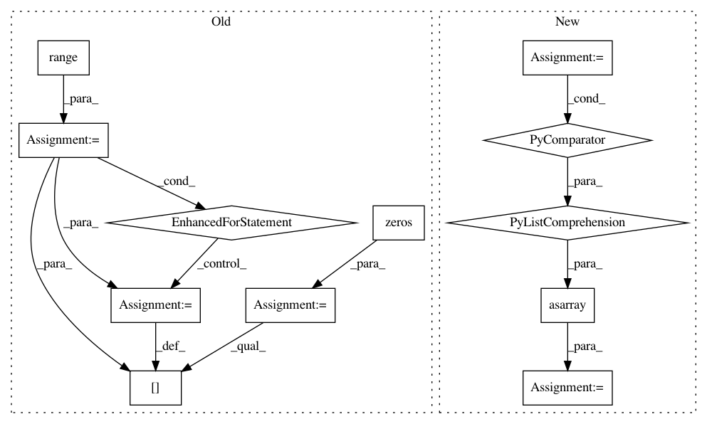

d892fb853c4c296539034d2dbaf304c0d06a357d,qiskit_acqua/ising/graphpartition.py,,sample_most_likely,#Any#Any#,180
Before Change
numpy.ndarray: binary string as numpy.ndarray of ints.
if isinstance(state_vector, dict) or isinstance(state_vector, OrderedDict):
temp_vec = np.zeros(2**n)
total = 0
for i in range(2**n):
state = np.binary_repr(i, n)
count = state_vector.get(state, 0)
temp_vec[i] = count
total += count
state_vector = temp_vec / float(total)
k = np.argmax(state_vector)
x = np.zeros(n)
After Change
if isinstance(state_vector, dict) or isinstance(state_vector, OrderedDict):
// get the binary string with the largest count
binary_string = sorted(state_vector.items(), key=lambda kv: kv[1])[-1][0]
x = np.asarray([int(y) for y in list(binary_string)])
return x
else:
n = int(np.log2(state_vector.shape[0]))
k = np.argmax(np.abs(state_vector))
In pattern: SUPERPATTERN
Frequency: 3
Non-data size: 12
Instances
Project Name: Qiskit/qiskit-aqua
Commit Name: d892fb853c4c296539034d2dbaf304c0d06a357d
Time: 2018-07-06
Author: 34400304+liupibm@users.noreply.github.com
File Name: qiskit_acqua/ising/graphpartition.py
Class Name:
Method Name: sample_most_likely
Project Name: scikit-optimize/scikit-optimize
Commit Name: 4af750bec058da0cf5d4a3245a443549b9d7fd33
Time: 2016-04-05
Author: manojkumarsivaraj334@gmail.com
File Name: skopt/dummy_opt.py
Class Name:
Method Name: dummy_minimize
Project Name: Qiskit/qiskit-aqua
Commit Name: a194557ba754f9b14d473ff9e39a2bc2449e58c1
Time: 2018-07-06
Author: chenrich@us.ibm.com
File Name: qiskit_acqua/ising/maxcut.py
Class Name:
Method Name: sample_most_likely